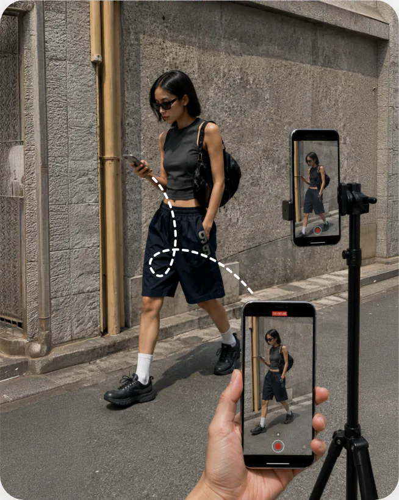
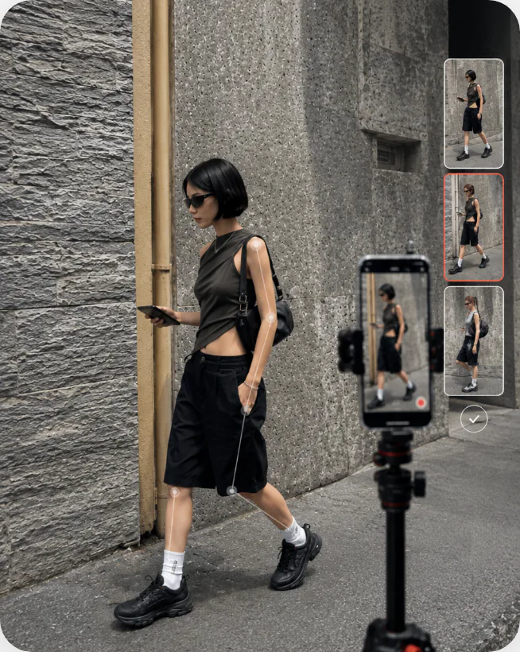
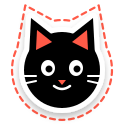

why peakpic
다시 찍어달라는 말,
다시 찍어달라는 말,
이제 그만해도 돼요
연인에게 부탁한 인생샷, 마음에 든 적 있나요?
그래서 피크픽은, 찍히는 사람이
카메라를 직접 지휘하게 했어요.
-
구도가 늘 아쉬워요
내가 원하는 앵글은 내 머릿속에만 있으니까요.
-
타이밍이 안 맞아요
가장 예쁜 순간은 셔터보다 늘 한 박자 빨라요.
-
다시 부탁하긴 민망해요
“한 번만 더”라는 말, 세 번째부터는 입이 안 떨어져요.

01 · mirroring
내가 찍히는 모습을
내가 찍히는 모습을
실시간으로 확인해요
촬영자의 카메라 화면을 내 스마트폰에서
바로 확인하고, 원하는 구도를 직접 맞춰보세요.

02 · pose guide
어색한 포즈 고민 끝,
어색한 포즈 고민 끝,
가이드 따라 찰칵
사진에 어울리는 포즈를 추천받고,
가이드에 맞춰 더 쉽게 인생샷을 완성해보세요.
03 · solo shot
이제 혼자서도
이제 혼자서도
원하는 사진을 찍어요
혼자 찍을 때도 포즈 추천과 가이드 같은 AI 기능은 그대로 써요.
셀카도 가이드 따라 더 쉽게 완성해보세요.

04 · my frame
출시 예정
최애 누끼 따서 붙이고,
최애 누끼 따서 붙이고,
나만의 프레임 완성
내 사진을 네컷 프레임에 넣고, 좋아하는 캐릭터나 연예인 사진을 누끼 따서 스티커처럼 붙여보세요.
출시되면 피크픽에서 바로 만나볼 수 있어요.